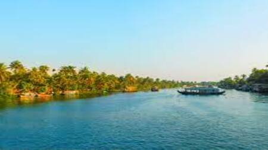
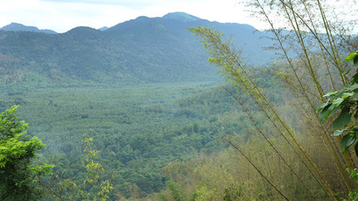
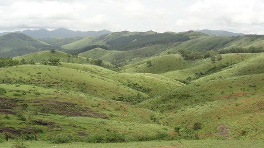

Illikkal Kallu
llikkal Kallu is a monolith located on top of the Illickal Malaa in the Kottayam district
Learn More

Kumarakom
It is set in the backdrop of the Vembanad Lake, the largest lake in the state of Kerala.
Learn More

Nadukani
The bird’s eye view from this hill station in Kottayam is sought out annually by people numbering into the thousands.
Learn More

Vagamon
Gifted with magnificent hill formations, natural attractions and panoramic views.
Learn More